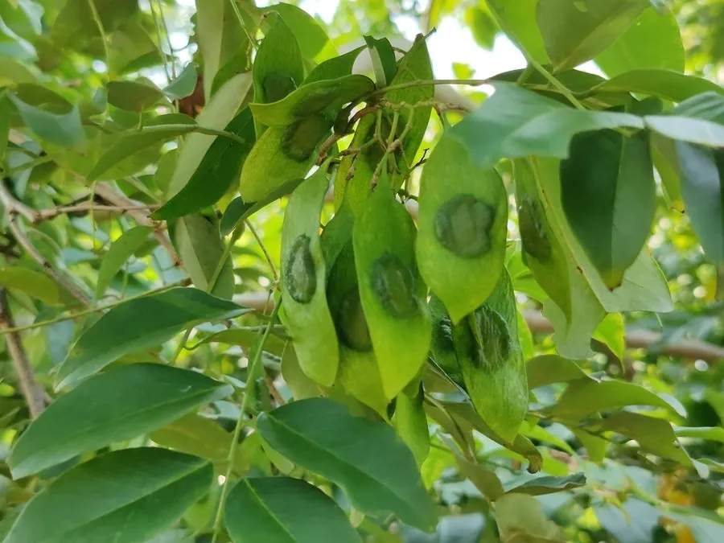

乔木 · 植物界
降香黄檀 Dalbergia odorifera

中国海南特有的珍贵用材树种，木材纹理瑰丽、香气独特，是制作古典家具的顶级材料，被列为国家二级保护植物。
- 分类
- 门被子植物门纲木兰纲目豆目科豆科属黄檀属
- 栖息环境
- 海拔 500 米以下的低山丘陵与台地，喜光耐旱，适宜砖红壤
- 地理分布
- 中国海南岛西部与南部的低山丘陵，为中国特有树种
- 保护级别
- 暂无评估；中国国家二级保护野生植物
物种志
降香黄檀为落叶乔木，高可达 15 m，树皮灰褐色；奇数羽状复叶，小叶 9–13 枚，卵形至椭圆形。花期 4–6 月，圆锥花序腋生，花淡黄色或白色；荚果长圆形、扁平，成熟时褐色，内含 1–2 粒种子。木材心材红褐色至紫红色，纹理绚丽，有独特香气。
降香黄檀是中国海南特有的珍稀树种，分布于海南岛西部与南部的低山丘陵，喜光、耐旱，适宜砖红壤。木材心材纹理瑰丽、香气独特、耐腐耐磨，是制作古典家具与工艺品的顶级材料，被称为“海南黄花梨”；心材还可入药，中药“降香”能行气活血、止痛。由于长期过度采伐，野生降香黄檀资源濒临枯竭，被列为国家二级保护野生植物。
形态与习性
- 株高可达 15 m，树皮灰褐色
- 花期4–6 月，圆锥花序腋生
- 果期9–10 月，荚果扁平
- 光照喜光，不耐长期荫蔽
- 水分耐旱，怕积水
- 主要用途古典家具与工艺品用材、降香入药
趣味知识
- 降香黄檀的木材被称为“海南黄花梨”，是古典家具的顶级材料。
- 降香黄檀心材纹理瑰丽、香气独特，与紫檀、酸枝并称名贵硬木。
- 野生降香黄檀资源濒临枯竭，已被列为国家二级保护野生植物。